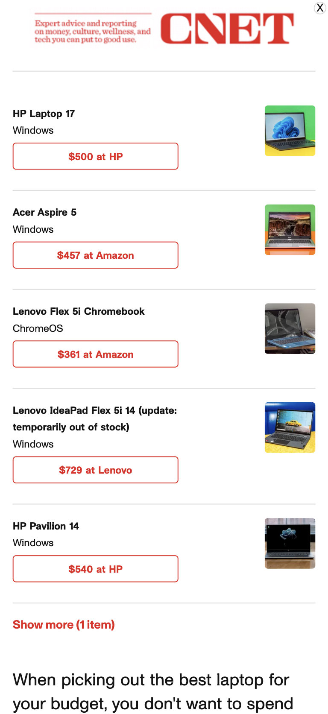

Proximity
Apple
apple.comThe apple website is a good example of grouping elements and information that belong together and separating them from those that are unassociated.
Alignment
The Church of Jesuschrist of Latter Day Saints
churchofjesuschrist.orgAs we can see from the image above the church´s website exemplifies the alignment principle by having left and right horizontal alignment in the library section.
Repetition
CNET
cnet.com At first glance, we can identify the principle of repetition on the CNET website in the identical way of displaying products related to different categories.